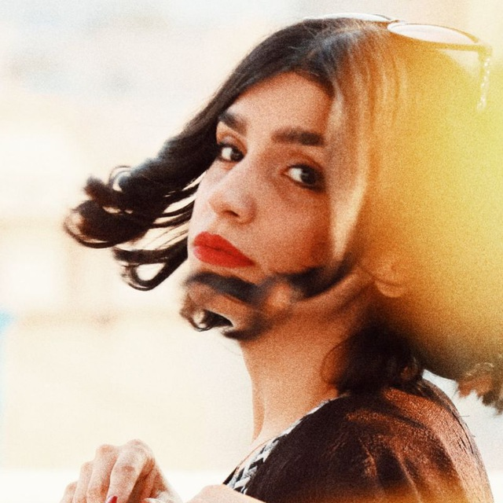

Fateme Abbasi
فاطمه عباسی
Actress · Theatre Director · Voice & Expression Instructorبازیگر · کارگردان تئاتر · مدرس بیان و صدا
Email monaaaabbasi@gmail.comBased in Tehran, Iranتهران، ایران

Actress and performer with a decade-long stage archive across City Theater, Paliz, Rooberoo Mansion, Hafez Hall and the Iranian Artists Forum, alongside short-film and series work. I move fluently between physical theatre, method-driven character work and ensemble performance, and I teach voice, expression and creative drama.بازیگر و اجراگر با آرشیوی دهساله از صحنه — از تئاتر شهر و پالیز تا عمارت روبرو، سالن حافظ و خانهی هنرمندان — در کنار آثار فیلم کوتاه و سریال. میان تئاتر فیزیکال، کار متد روی شخصیت و اجرای گروهی حرکت میکنم و بیان، صدا و نمایش خلاق تدریس میکنم.
Skillsمهارتها
- Stage & screen actingبازیگری صحنه و تصویر
- Physical & wordless theatreتئاتر فیزیکال و بیکلام
- Method & Stanislavski techniqueمتد و تکنیک استانیسلاوسکی
- Voice, expression & singingبیان، صدا و آواز
- Puppeteeringعروسکگردانی
- Writing, make-up, photographyنویسندگی، گریم، عکاسی
Educationتحصیلات
- MA, Dramatic LiteratureSooreh Universityکارشناسی ارشد ادبیات نمایشیدانشگاه سوره
- BA, Theatre DirectingSooreh Universityکارشناسی کارگردانی تئاتردانشگاه سوره
- Diploma, TheatreSooreh Art Schoolدیپلم نمایشهنرستان سوره
Languagesزبانها
- Persian — nativeفارسی — مادری
- English — professionalانگلیسی — حرفهای
Selected Theatreتئاتر منتخب
2024Man az To Bidar — dir. Hamidreza Zakiani · Underground theatre
2024Parliamentary Lie — dir. Amir Mohammad Hosseini · Shahrzad Hall, City Theater
2022Radio Theatre Chehrazi — dir. Mehdi Rasti · Simorgh Hall
2022Haval = Hael Mian-e Do Chiz — dir. Sayeh Keyvanlou · Bahar Gallery, Artists Forum
2021The Family of Mr. Hashemi — dir. Ali Amel Hashemi & Hadi Amel · Sangelaj Hall
2020Bazi dar Vaght-e Ezafeh — dir. Ali Nasirpour · Rooberoo Mansion
2019Kachal va Kaftarbaz — dir. Ali Nasirpour · Kanoon (IIDCYA)
2019Parvaneh va Yough — dir. Javad Mohammadpour · Hafez Hall
2018Alhakom Altakasor — dir. Zakiani & Mohammadi · Rooberoo Mansion
2018Ama… Na… Agar… (100 Years of Solitude) — dir. Shahrzad Gilakpour · Baran Hall
2018Raz-e Bagha — dir. Saleh Alavizadeh · Paliz Theater
2017Macondo — dir. Azadeh Ansari · Paliz Hall
2017The Others — dir. Sara Shahabadi · Drama Theater
2017Akhkando — dir. Hadi Amel · Qashqai Hall, City Theater
2016The Happiness of Little Cockroaches — dir. Azadeh Ansari · Saye Hall, City Theater
2014Death of a Salesman — dir. Nader Borhani Marand · Main Hall, City Theater
Fateme Abbasi — Curriculum Vitae · monaaaabbasi@gmail.com
01/02Fateme Abbasi فاطمه عباسی
Film, Series & Teachingفیلم، سریال و تدریس
Awardsجوایز
- First Place, Female Acting — Ravayat-e Yek Tir-e Tanha, 4th Shamse Festival (2015)رتبهی اول بازیگری زن — روایت یک تیر تنها، چهارمین جشنوارهی شمسه (۱۳۹۴)
- First Place, Female Acting — Hamlet, Tajrobe Theatre Festivalرتبهی اول بازیگری زن — هملت، جشنوارهی تئاتر تجربه
- Best Leading Actress — Student Festival (classical repertoire)بهترین بازیگر نقش اصلی زن — جشنوارهی دانشجویی
- Group Acting Award — Kachal va Kaftarbaz, Intl. Tunisia Festivalجایزهی گروهی بازیگری — کچل و کفترباز، جشنوارهی بینالمللی تونس
- Appreciation Certificate — Intl. Children & Youth Theatre Festivalلوح تقدیر — جشنوارهی بینالمللی تئاتر کودک و نوجوان
Referencesمعرفها
- Available on request.در صورت درخواست.
Film & Seriesفیلم و سریال
●Khab — short film, dir. Taktam Abbasiخواب — فیلم کوتاه، تکتم عباسی
●Nahal va Fazanavard — short film, dir. Esmail Kamali Roustaنهال و فضانورد — فیلم کوتاه، اسماعیل کمالی روستا
●Dainosorha — short film, dir. Sara Shahabadiدایناسورها — فیلم کوتاه، سارا شاهآبادی
●Mokammel — short film, dir. Mojtaba Karimi (2022)مکمل — فیلم کوتاه، مجتبی کریمی (۱۴۰۱)
●Chay Nabat — TV series (2024–25)چای نبات — سریال (۱۴۰۳)
●Naresideh be Vesal — TV series (2025–26)نرسیده به وصال — سریال (۱۴۰۴)
Teachingتدریس
●Damghan University — “From Voice to Stage” workshop (2024–25)دانشگاه دامغان — کارگاه «از صدا تا صحنه» (۱۴۰۳)
●Taranom Baran Institute — voice, acting & creative drama (2023–27)موسسهی ترنم باران — بیان، بازیگری و نمایش خلاق (۱۴۰۲–۱۴۰۵)
●Sepehr Marefat School — dramatic arts teacher (2022–27)مدرسهی سپهر معرفت — معلم هنرهای دراماتیک (۱۴۰۱–۱۴۰۵)
●Sam Studio — voice & expression instructor (2021–22)استودیو سام — مدرس صدا و بیان (۱۴۰۰)
●Private voice & expression coaching (since 2019)تدریس خصوصی بیان و صدا (از ۱۳۹۸)
Fateme Abbasi — Curriculum Vitae · monaaaabbasi@gmail.com
02/02